COMP 2406 - Winter 2023 Tutorial 8
SQLite Database with CLI
© L.D. Nel 2023
Description:
The purpose of this tutorial is to get you familiar with relational database concepts and using the SQLite database from its CLI (Command Line Interface). You should watch the video lecture on Database Concepts before attempting this tutorial.
Important: tutorials are meant to be started and submitted as homework. You can come and get help each week at the your registered tutorial session but it's best to get started before the session.
Tutorial Grading: To get credit for weekly tutorials you need to submit to brightspace your code and a ReadMe.txt file with at least your name, student number and the link to your YouTube screen capture demonstration video. The video should have sound narration and demonstrate that you have met the tutorial requirements. (Make sure your video is "unlisted" and not "private" on YouTube - otherwise we won't be able to view it and it will be counted as missing. Submit a single .zip file with all your contents to Brightspace. Brightspace should allow you to resubmit your file up until the due time and will only keep the most recent submission. Grade is 0,1, or 2 as follows:
| Mark | Tutorial Grading |
|---|---|
0marks |
No submission or incomplete submission. Submissions without accompanying video get a mark of 0. Note: mark is 0 if any of the following are true:
|
1mark |
Some, but not enough, requirements met or demonstrated. Note: mark is only 1 if any of the following are true:
|
2marks |
All requirements met and demonstrated in accompanying video for required problems. Does not include problems labelled as "Optional" |
Preliminary:
This tutorial requires that you have the SQLite command line interface installed on your computer. There is a section in the notes on installing the SQLite command line interface but it is also already installed on in our openstack images.
SQLite is a very popular serverless relational database. Serverless means there is no separate database server like with MongoDB, or MySQL. There is just the database file within the code of your project and, in the next tutorial, the npm sqlite3 module used to access it from a node.js application. In this tutorial we will be working only on the SQLite command line interface.
To make sense of this tutorial you will have to have watched the video lecture on Database Concepts.
Problem 1: Accessing The recordings.db Database
Assuming you have SQLite properly installed access the provided recordings.db database by executing the following command in a command terminal open on the directory where your recordings.db file is located:
sqlite3 recordings.db
You should see something like the following.
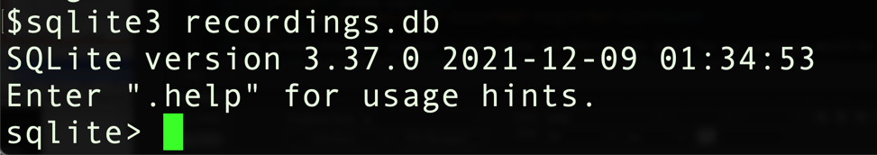
Execute the "dot" command
.tables
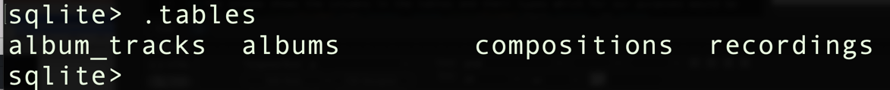
to see what tables are in the database.
Recall that the command-line dot commands don't end in a semicolon that but SQL statements do.To exit out of the sqlite3 command line interface you can execute .exit.You can learn about the .dot commands of the sqlite3 CLI by executing .help
I've also included a html document of useful dot commands with the tutorial files. To learn about SQL syntax visit the SQL syntax section of the sqlite.org website:
https://www.sqlite.org/lang.html
Execute the following commands to see what is in the albums table. The .mode will set the output to column mode and the .header on will show the names of the table columns in the output.
.mode column
.header on
select * from albums;
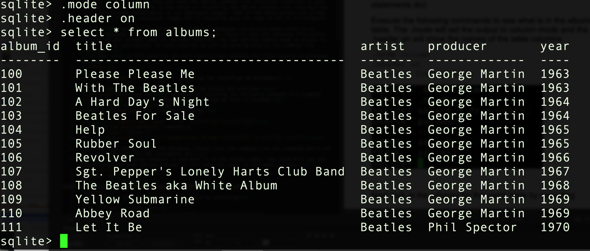
To show only the album_id and title from the albums table execute:
select album_id,title from albums;
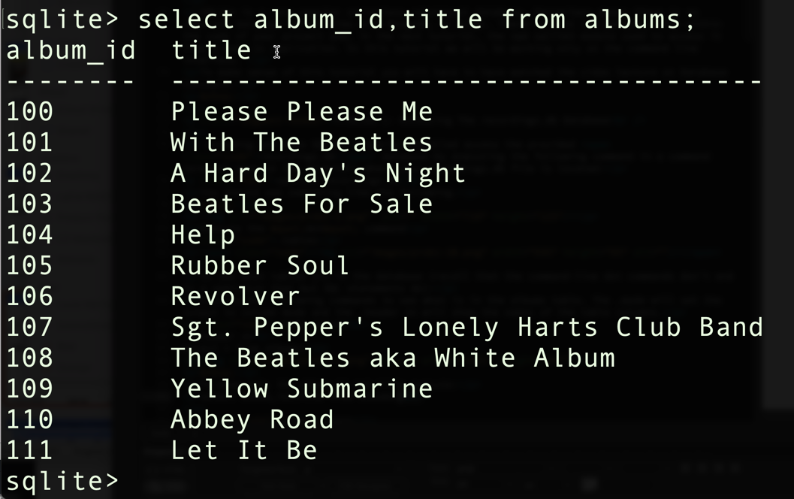
You can control the minimum character width of columns being displayed as follows:
.width 10 40
select album_id,title from albums;
Next look at the schema for the albums table
.schema albums
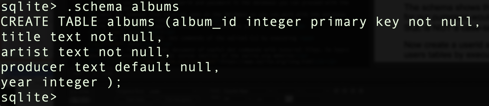
The schema shows the columns in the tables and their types which, for our purposes, would be either int, text, or real. Note that SQL is NOT a case-sensitive language (something that is annoying by modern language standards).
Problem 2: Understanding The recordings.db Database
Here is the ER (Entity Relationship) model of the recordings database. ER models are the traditional way of describing a database architecture.
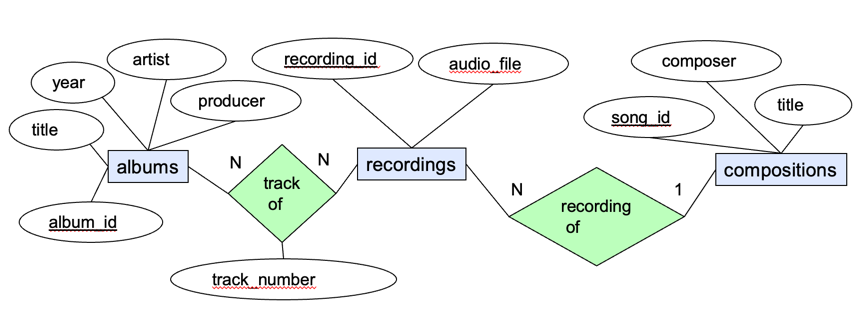
The rectangles are entities (typically tables). The bubbles are attributes (typically columns of tables) and the diamonds are relationships between entities. Relationships are either implemented as tables of their own or by adding columns to existing tables.
In this database albums represent music albums or CDs. That is, some sort of packaging of recorded music. The compositions represent written songs. The recordings represent audio recordings of songs including the name of the audio file of the recording. The recording of relationship is 1:N indicating there can be many recordings of a particular song but a recording is always of a particular song. The track of relationship is N:N indicating that an album has many recordings and that a particular recording can appear on many albums.
Here is a schema diagram of how this database is implemented:
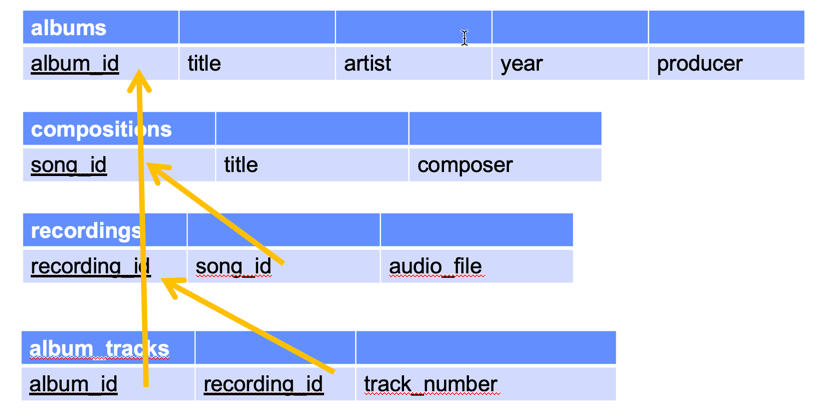
Notice how the tracks of relationship has been implemented by it own table (album_tracks) where as the recording of relationship has been implemented by adding a foreign key to the recordings table.
Now lets create an query that will show the names of the songs that appear on the Beatles' "Rubber Soul" album.
First we will need to know the album_id of the "Rubber Soul" album. Select the album_id and title of the albums table to discover that:
select album_id,title from albums;
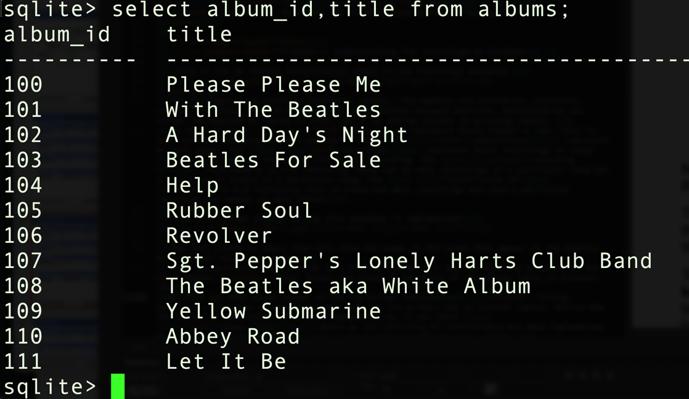
Now lets discover the names of the songs that appear on the "Rubber Soul" album (notice I'm setting the .width based on the size of column data I'm expecting):
select * from album_tracks where album_id=105;
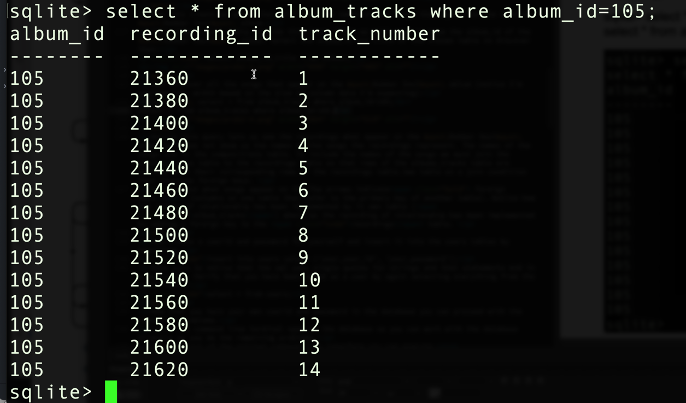
This query lets us see the recordings that appear on the "Rubber Soul" album but does not show us the names of the songs the recordings represent. The names of the songs are in the compositions table. First we must join the album_tracks table to the recordings table to match the album track rows with their corresponding recordings. The join must always be along the values of a foreign key (recording_id in this case). This join will allow us to discover the song_id of the composition the recording represents.
.width 5 5 10 5
select album_id,track_number, album_tracks.recording_id, recordings.song_id
from
album_tracks join recordings on album_tracks.recording_id = recordings.recording_id
where album_id = 105;
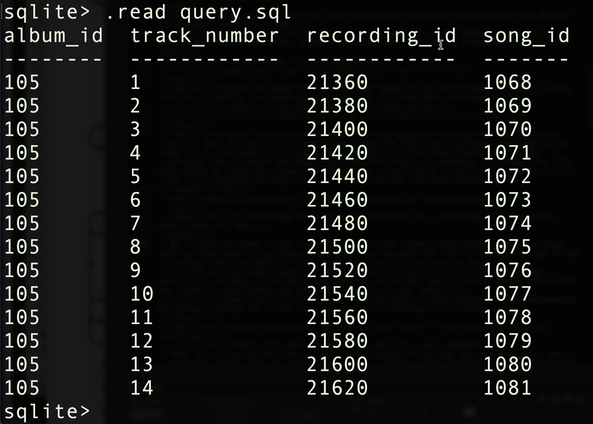
Notice that the screen capture shows that I'm executing .read query.sql instead of the commands above. Since my query is getting too complicated to type in (and correct) each time I'm placing the query commands in a file text file called query.sql and then just reading that file with a .read command. This way you could edit your query at leisure in the text file and get it right instead of on the command line.
Next we need to join in the compositions table so we can get access to the actual song names:
.width 5 5 10 5
select album_id,track_number,album_tracks.recording_id,recordings.song_id, compositions.title
from
album_tracks join recordings on album_tracks.recording_id = recordings.recording_id
Join compositions on recordings.song_id = compositions.song_id
where album_id = 105;
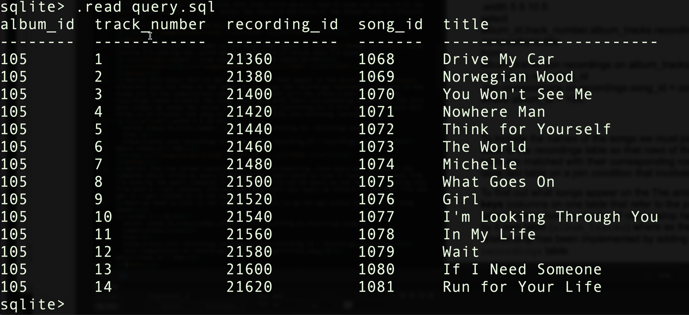
Finally lets clean up the query to only show the columns we are interested in:
select album_id,track_number,compositions.title
from
album_tracks join recordings on album_tracks.recording_id = recordings.recording_id
Join compositions on recordings.song_id = compositions.song_id
where album_id = 105;
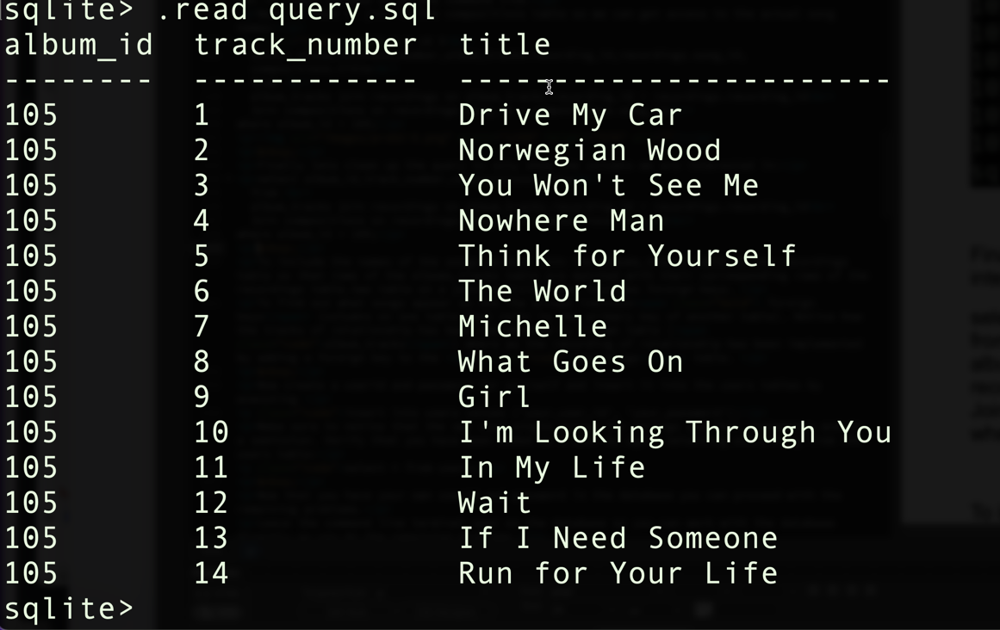
Problem 3: User Playlists
For this problem we want to add user playlists to the database. Here is an ER model of what we want the database to be:
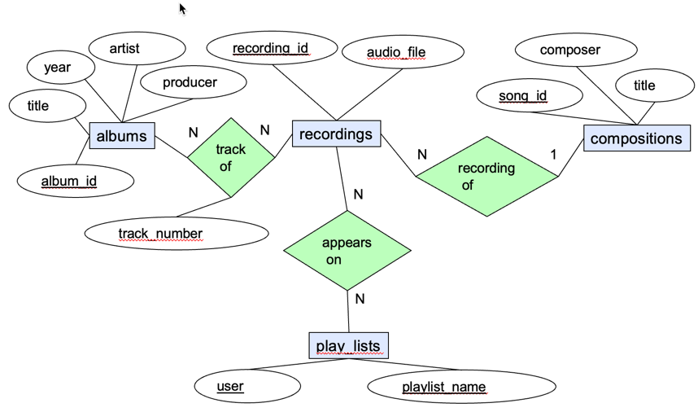
Playlists respresent user playlists. Each user can can have multiple playlists with different names. Hence the compound key: user,playlist_name. Recordings appear on playlists. The appears on relationship is N:N indicating the each playlist can have many recordings and a recording can appear on many playlists.
We are going to represent both the play_lists entity and the appears on relationship in a single table: playlist_tracks with the following schema:
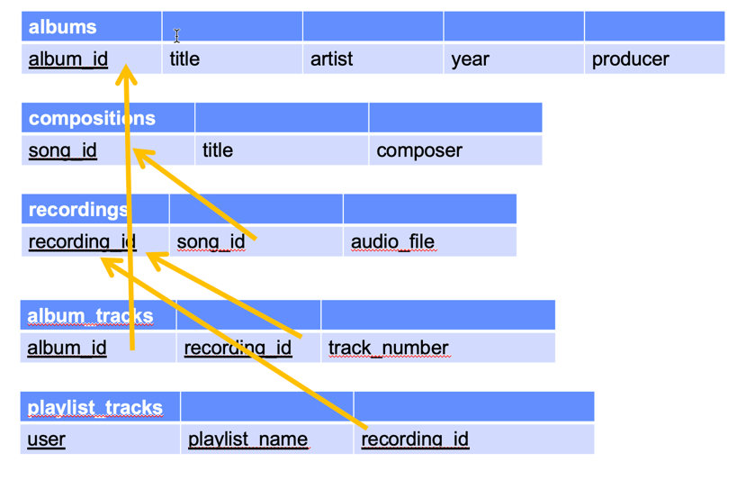
Create the new playlist_tracks table with the following SQL command
create table playlist_tracks (
user text not null,
playlist_name text not null,
recording_id integer not null references recordings(recording_id),
primary key (user,playlist_name,recording_id) );
Verify your table exists and check its schema by executing:
.tables
.schema playlist_tracks
Find some songs you like in the database and discover the recording_id of their corresponding recordings. Now create some users and playlists tracks by executing insert commands like the followng. Create at least two users with two playlists each and at least three songs on each playlist. (Make sure to notice that the SQL uses single quotes for strings.)
insert into playlist_tracks values ('Louis', 'favourites', 22800);
Select everything from your playlist_tracks to see what you have. Mine looked something like this:
select * from playlist_tracks;
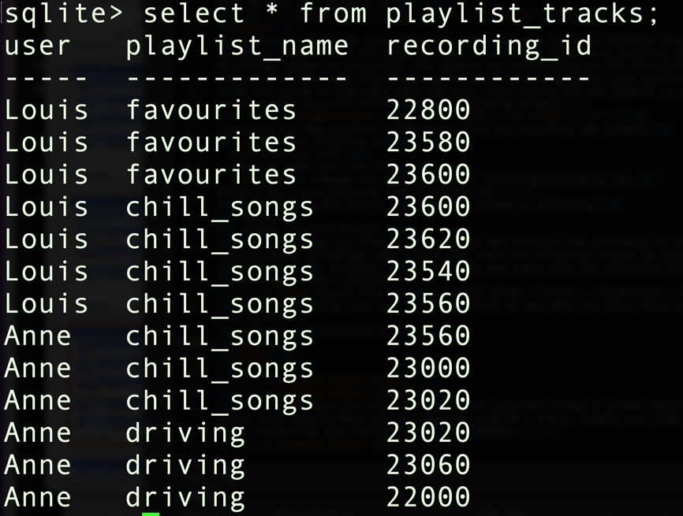
Finally modify your query so you show the actual names of the songs on the playlist and not just their recording_id:
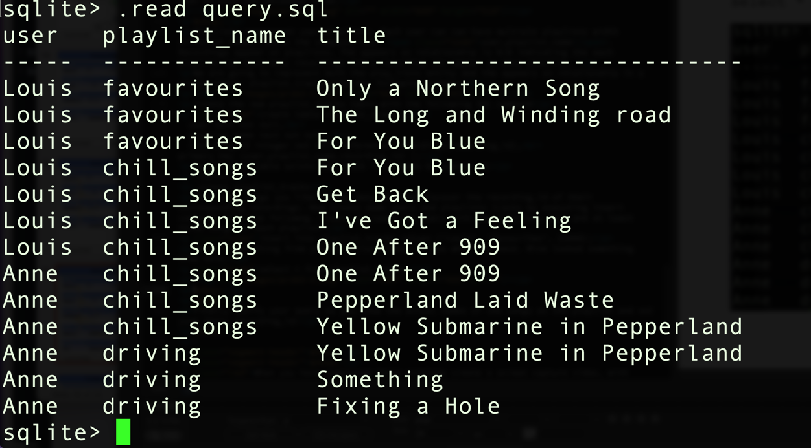
When you have completed these problems create a screen capture video, with sound, that demonstrates you've completed problem 2 and 3. Submit your code and readme.txt file (containing your YouTube link) to brightpace.